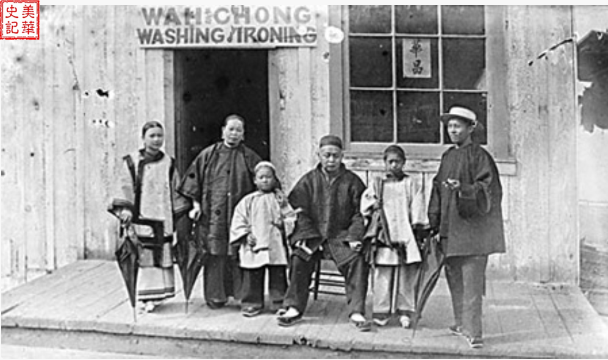
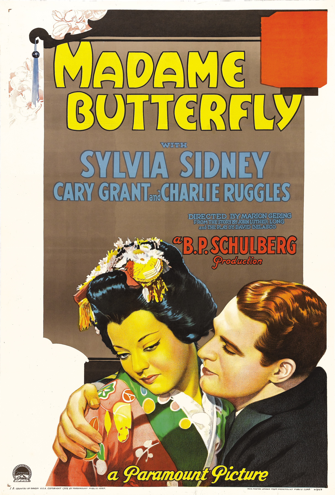
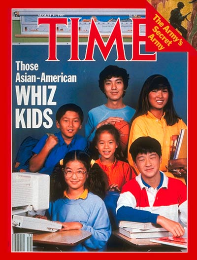
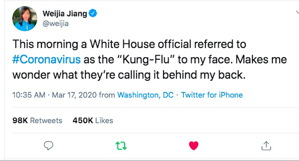

During WW II, the United States entered the war against the Axis powers of Italy, Germany and Japan. Fearing that Japanese Americans still hold loyalty to Japan, Franklin D. Roosevelt signed an executive order that forcibly relocated Japanese Americans to internment camps. This picture depicts Fred Koremastu who was in the landmark case Korematsu v. United States that upheld the relocation of Japanese Americans to those camps. Although it was claimed that the internment camps were neccessary to protect the security of the nation during times of war, there was very little evidence to support the idea that Japanese Americans were disloyal. Rather, the camps and forceful relocation were products of racism.
Click here to learn more about Fred Korematsu
Click here to learn more about the Japanese internment camps
Many Chinese immigrants had a hard time earning a living in the United States as they faced racial discrimination and it was extremely difficult to find any jobs that would hire them. This picture depicts a Chinese family in front of a Chinese laundromat which was one of the few occupations they were able to do in order to earn a living. Many Chinese immigrants worked jobs that no one else wanted to do and were seen as traditionally feminine jobs. This coupled with other factors such as long hair lead to the view that Chinese men were not masculine as they did not conform to traditional ideas of masculinity.
Click here to learn more about Asian laundromats
Madam Butterfly is a short story written by John Luthor Long in 1898 which details the story of Cho-Cho-San, a geisha and her westerner husband Benjamin Franklin Pinkerton. Throughout the story, Cho-Cho-San is depicted as a loyal wife waiting patiently for her husband's return.On the other hand, Pinkerton is shown to be manipulative and disloyal as he returns to Cho-Cho-San with his real wife towards the end of the story. This is an example of the idea of the Orient, a depiction of the East created by Europe where the East is seen as an exotic place where the women are loyal, beautiful and submissive. This can be seen in Madam Butterfly with the depiction of Cho-Cho-San, but also in the play M.Butterfly by David Henry Hwang. M.Butterfly explores the relationship relationship between René Gallimard and Song Liling. Gallimard falls in love with Song and when he discovers that Liling was actually a man, he commits suicide. The play shows how Rene was consumed by the illusion of the Orient and believed Song to be beautiful and submissive oriental women. When the truth was revealed, he would rather die for his beliefs than face reality. The Orient paints a false picture of the East as it groups a plethora of unique people and culture under a single category. This results in many Asian stereotypes that are not only harmful but untrue.
Here's a scene from M.Butterfly about the Orient
This picture shows the cover of Time magazine of Asian Americans and calls them wiz kids. This is a representation of the model minority which is the idea that a minority group has achieved success through hard work and serve as a model for other minority groups to emulate. This label arose for Asian Americans as they have seen success in various fields including education and thus are seen as role models for other minorities. However, not only is this label a myth but also very harmful as well.Although Asian Americans have made great progress, that doesn't mean they still don't face issues like other minority groups such as racism and underrepresentation in politics. This can be seen in the field of education as despite Asian Americans making up a large portion of top universities, they are still being discriminated against. There have been many reports that Asians are seen as less desirable because universities want to balance out their student population for diversity. In fact, this situation shows how Asian Americans' own success and race is being used against them and highlights the myth of the model minority
Click here to learn more about model minority
This is Mickey Rooney portraying an Asian character in Breakfast at Tiffany's and is an infamous example of yellowface. Yellowface is the portayal of Asian characters in media by white actors and often with stereotypes. In many cases, these stereotypes are offensive to the ethnicity being depicted and paints a distorted view of a group of people and takes away job opportunities for Asian actors. In Rooney's case, he depicted a Japanese man with a very stereotypical Japanese accent and offensive Japanese caricatures. Although there has been an improvement over the years as more Asian actors are given leading roles (Sima Liu in Shang-Chi), they are still heavily underrepresented in cinema today.
Click here to see Mickey Rooney's performance.
This photo shows a tweet criticizing the term "Kung-Flu" being used to describe Covid-19 as it is seen as being offensive to Asians. During the pandemic, the term was used prominently by President Donald Trump to describe the virus and was criticized as being racist and making light of the pandemic. With the Coronavirus pandemic of 2020, discrimination against Asians greatly rose as the first confirmed infections came from Wuhan, China. Many Asian Americans were targets for violence and racism with some being left with serious injuries or even death.
Click here to see an example of the rise of anti-Asian hate.
Click here to see President Donald Trump using the term "Kung Flu"